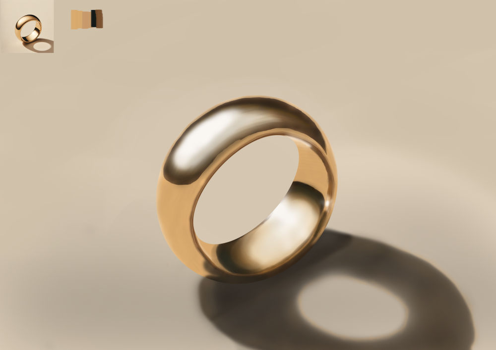
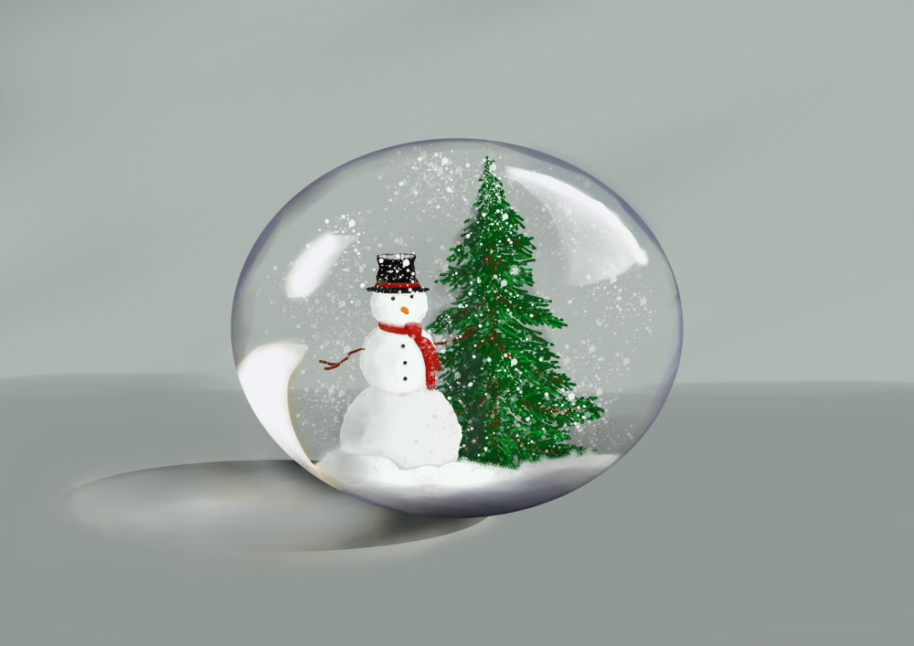
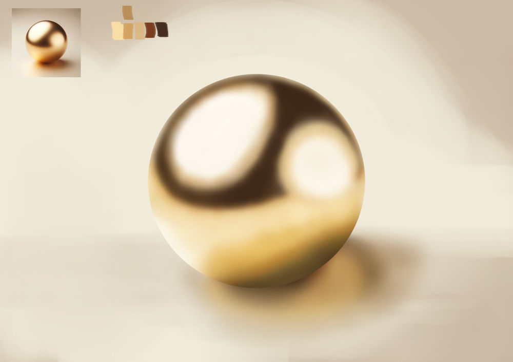
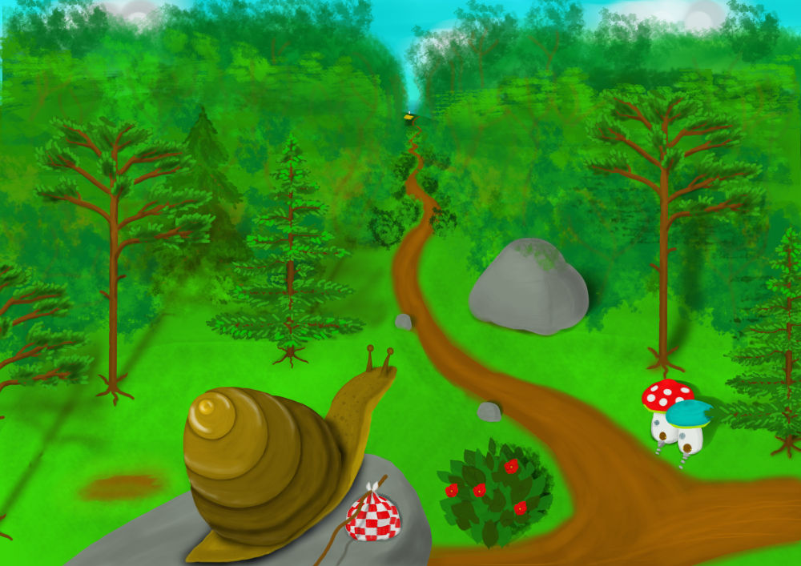

Galleri
Välkommen till mitt webbvernissage. Jag heter Gunnar och det är med stor glädje jag får bjuda in dig till denna digitala utställning av mina verk.
Under fliken Galleri har jag samlat ett urval av mina arbeten som representerar mitt konstnärskap. För mig handlar skapandet om att utforska känslor, former och berättelser – ofta inspirerade av både det vardagliga och det mer abstrakta.
Jag arbetar med färg, struktur och kontraster för att skapa verk som både väcker nyfikenhet och ger utrymme för egen tolkning. Varje målning är en del av en process där jag försöker fånga något som kanske inte alltid går att sätta ord på.
Genom detta webbvernissage vill jag göra min konst tillgänglig oavsett var du befinner dig. Ta din tid, klicka dig runt i galleriet och låt varje verk tala till dig på sitt eget sätt.
Om det är något av verken som talar till dig och du har intresset för att köpa så kan du gå in i Kontakt fliken för att kontakta mig.
Oljemålningar

"Solnedgång över Havet - 100kr"
60 × 80 cm

"Ängelhimmel - 150kr"
70 x 90 cm
"Ola på Gården - 120kr"
60 × 80 cm
"Gunn-Britts Glädje - 200kr"
60 × 80 cm
Akrylmålningar

"Väst möter Öst - 180kr"
70 × 20 cm
"Görans Kamp - 250kr"
80 × 100 cm
"Amerikas Dröm - 160kr"
60 × 80 cm
"Englands Klippor - 200kr"
60 × 80 cm
Akvarellmålningar

"Rörelse i färg- 180kr"
70 × 100 cm
"Tystnad - 120kr"
50 × 60 cm
"Inre landskap - 180kr"
70 × 100 cm
"Mörker och ljus - 250kr"
120 × 120 cm